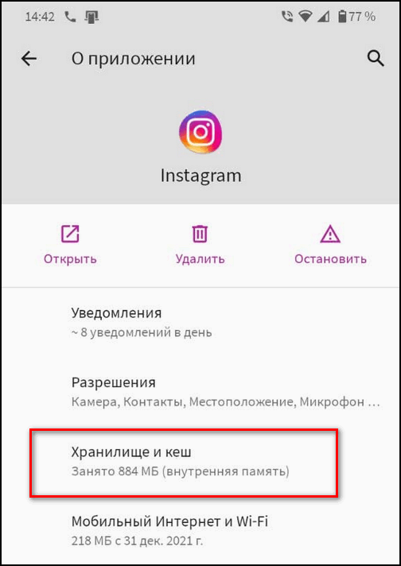
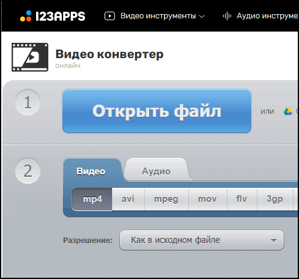

Ошибки при размещении и просмотре Рилс в Инстаграм

Если произошла ошибка 6 в Инстаграме* в Рилс, значит причина в небольшом формате клипа или автор неправильно настроил отображение текста. Есть и другие проблемы, которые встречаются в этом разделе при редактировании, загрузке и удалении записей.
Ошибка 6 в Рилс Инстаграма*: когда появляется
Произошла ошибка – уведомление, которое появляется на экране, если пользователь допустил ошибку при изменении видео. К примеру, создавая запись с текстом и выбирая его продолжительность на видеодорожке, может появиться эта ошибка. Дальнейшая обработка клипа невозможна, а текущий прогресс будет сброшен.
Другие причины, когда она возникает:
- не хватает свободного пространства временной памяти. Проще: заполнен кэш приложения и нужно очистить, прежде чем редактировать клип или добавлять новые элементы;
- запись была загружена в черновики. Предыдущая очистка данных Инстаграма* повлекла ошибку с удалением важных частей клипа;
- оригинал записи был удален с устройства.
Если при создании клипа автор неправильно выбирает продолжительность или обрезает клип до 5 секунд – редактирование будет прекращено.
Способы решения
Чтобы решить ошибку, пользователь должен обратить внимание на редактирование записи и продолжительность клипа. Если видеоклип менее 5 секунд, то проблема решает обычным добавлением кадров или замедлением. Решить другие причины:
- Зайти в Настройки смартфона – Приложения.

- Instagram* – Очистить кэш.

Желательно перезагрузить смартфон и заново зайти в социальную сеть. Если ошибка продолжает появляться при изменении одно и того же клипа – возможно, проблема заключается в расширении файла или его объеме. Как поменять тип файла на MP4:
- Воспользоваться ссылкой: Конвертировать видео.
- Добавить видеоклип в раздел: «Открыть файл» - выбрать подходящий формат.

- Подождать, пока будет завершен процесс конвертирования.
После зайти в Инстаграм* и попытаться опубликовать новую версию. При снижении объема, клипы грузятся быстрее и возникает меньше ошибок.
Произошла ошибка 2 при загрузке
Ошибка 2 в Инстаграме* Reels появляется из-за сетевого подключения. Частая причина: отсутствие стабильной сети или проблемы при работе текущего соединения. Есть способ, как решить ошибку:
- Перейти к панели управления устройством.
- Включить и выключить «Режим полета».
Такой вариант подходит, если есть проблемы при подключении к Wi-Fi или мобильным данным. Другой метод – просто перезапустить устройство.
Ошибка 2 может не появляться в других разделах, а только при загрузке медиафайлов. Это значит, что скорости интернета достаточно чтобы прогружать чужие материалы, но низкая для передачи данных со своего устройства.
Список других ошибок в Рилс Инстаграма*
В Reels ошибки видео идентифицируются по номерам. В список распространенных проблем при запуске, загрузке или редактировании, входят:
| Номер: | Причина: |
| «Нам жаль, но что-то пошло не так» | отсутствие обновлений, временный сбой |
| № 9: при импорте видео произошла ошибка | нужно увеличить отображение кадров до 60 FPS |
| № 403 | сброшена авторизация |
В большинстве, проблемы рекомендуют решать через обновление приложения, удаление кэша или переустановку. Также, нужно проверять подключение к сети при возникновении одной из ошибок.
Нестандартный способ, как решить ошибки – подключиться или выйти из программы бета-тестирования. Доступна в Play Market и является предложением о получении новых версий раньше, чем для остальных пользователей. Но в этом есть недостаток: новые версии зачастую нестабильны и часто вызывают сбои, проблемы при загрузке материалов.